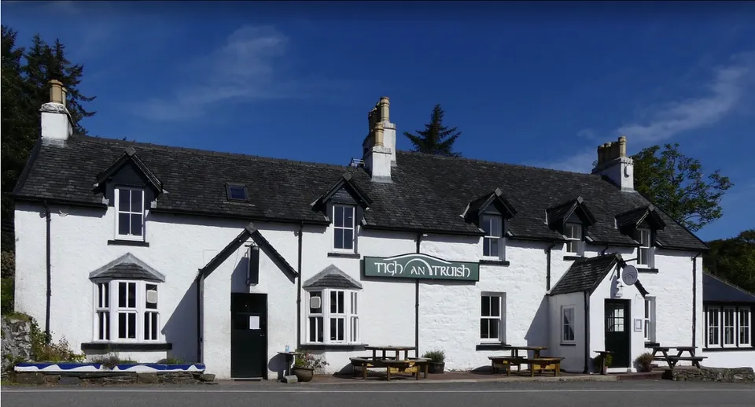
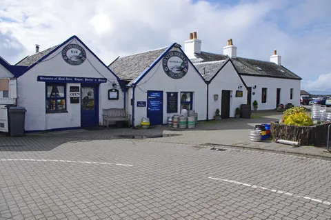

Tigh an Truish Inn
An iconic 2AA Rosette restaurant beside the historic Bridge Over the Atlantic. Known for seasonal, refined cuisine and featured on MasterChef: The Professionals.
Visit Website →We ship live langoustines, lobsters and razor clams across Europe and Asia — with full traceability, export documentation.
Our clients include seafood wholesalers and premium distributors in France, Spain, Hong Kong and Singapore.
We welcome enquiries from any potential new buyers and suppliers.
Want to be featured?
Get in touch →
For over , we've delivered to local restaurants, and seafood bars — across Seil, Oban and the west coast of Scotland.
Below are some of our regular clients who feature our catch on their menus.

An iconic 2AA Rosette restaurant beside the historic Bridge Over the Atlantic. Known for seasonal, refined cuisine and featured on MasterChef: The Professionals.
Visit Website →
A warm, family-run spot offering fresh shellfish and locally farmed produce in one of Scotland’s most scenic west-coast villages.
Visit Website →